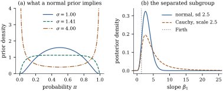

39.5 Priors as regularizers
Proposition 30.1.4 already said that every penalty is a prior and every prior a penalty: the maximizer of a penalized log-likelihood is the mode of a posterior whose log prior is minus the penalty. This section takes that identity in the other direction and asks what a prior does in a generalized linear model. The answer is more than shrinkage: a prior carrying almost no information can still be the difference between an estimate and no estimate at all.
39.5.1. Two correspondences and a warning about scale
Let
(a) (Normal prior, ridge penalty.) Under
(b) (Laplace prior, lasso penalty.) Under
(c) (What a normal prior says about a probability.) In a binary model with logit link, suppose the linear predictor at some covariate value has the prior
(d) (Existence.) Under the prior of (a), or under independent Cauchy priors on the
Proof.
(a) The log posterior is
(b) The log prior is
(c) Write
If
If
- (d) With the normal
prior the objective is coercive and strictly concave, as
in (a). With independent Cauchy priors of scales
Part (c) is the warning. A prior that is
“noninformative” about a coefficient is a strong
statement about a probability: a
This is why the default priors recommended for
logistic regression are much tighter than “vague”.
Gelman, Jakulin, Pittau and Su (2008) rescale every
covariate to mean zero and standard deviation
39.5.2. Priors as penalties, checked
Remark (Scaling is not optional).
Both correspondences put the same
On the
import numpy as np
import statsmodels.api as sm
from scipy import optimize, special, stats
anes = sm.datasets.anes96.load_pandas().data
Xf = np.column_stack([anes["PID"], anes["age"], anes["educ"], anes["income"]])
Xf = (Xf - Xf.mean(0)) / Xf.std(0) # standardize, as any penalty requires
Xf = np.column_stack([np.ones(len(Xf)), Xf])
yf = anes["vote"].to_numpy(float)
def map_estimate(penalty, lam, steps=30):
"""Posterior mode: maximize the log-likelihood minus lam times a penalty on the slopes.
A normal prior gives the ridge penalty and is solved by Newton's method; a Laplace
prior gives the lasso penalty and is solved by coordinate descent on the working
least squares problem of each Newton step.
"""
beta = np.zeros(Xf.shape[1])
for _ in range(steps):
pi = special.expit(Xf @ beta)
w = np.maximum(pi * (1 - pi), 1e-8)
z = Xf @ beta + (yf - pi) / w # the working response
if penalty == "ridge":
P = np.diag([0.0] + [1.0] * (Xf.shape[1] - 1))
beta = np.linalg.solve(Xf.T @ (w[:, None] * Xf) + lam * P, Xf.T @ (w * z))
continue
for _ in range(40): # coordinate descent for the lasso
for j in range(Xf.shape[1]):
r = z - Xf @ beta + Xf[:, j] * beta[j]
num, den = np.sum(w * Xf[:, j] * r), np.sum(w * Xf[:, j] ** 2)
beta[j] = (num / den if j == 0
else np.sign(num) * max(abs(num) - lam, 0.0) / den)
return beta
unpenalized = map_estimate("ridge", 0.0) # the maximum likelihood fit
lams = np.array([1.0, 4.0, 16.0, 64.0, 256.0])
ridge_path = np.array([map_estimate("ridge", l) for l in lams])
lasso_path = np.array([map_estimate("lasso", l) for l in lams])
print(f"unpenalized slopes: {np.round(unpenalized[1:], 3)}")
print("normal prior with sd tau = 1/sqrt(lam) -> ridge; Laplace prior with b = 1/lam -> lasso")
for k, l in enumerate(lams):
print(f" lam {l:6.1f} ridge {np.round(ridge_path[k, 1:], 3)} "
f"lasso {np.round(lasso_path[k, 1:], 3)}")The Bayesian reading does not stop at the mode. Park
and Casella (2008) noted that the Laplace prior is a
scale mixture of normals —
39.5.3. A prior that rescues an estimate
Example (A separated subgroup)
fitted the intended vote on party identification among
the
Under the flat prior the posterior is not a
distribution at all, and the arithmetic shows it:
integrating the likelihood over a square box centred at
the origin gives
An independent
Set these beside the frequentist answers of Section
35.3. The ordinary likelihood ratio gives the
one-sided interval

sub = anes[anes["educ"] == 1] # schooling stopped at or before grade eight
Xs = np.column_stack([np.ones(len(sub)), sub["PID"]])
ys = sub["vote"].to_numpy(float)
def loglik(b0, b1):
"""Logistic log-likelihood at one intercept and a whole grid of slopes."""
eta = b0 + np.outer(b1, Xs[:, 1])
return np.sum(ys * eta - np.logaddexp(0.0, eta), axis=1)
def log_prior(b0, b1, kind, scale=2.5):
if kind == "flat":
return 0.0 * b0
if kind == "normal":
return -(b0 / 10.0) ** 2 / 2 - (b1 / scale) ** 2 / 2
return -np.log1p((b0 / 10.0) ** 2) - np.log1p((b1 / scale) ** 2) # Cauchy
def posterior_of_slope(kind, k=1200, s0=30.0, s1=6.0):
"""Marginal posterior of the slope, by quadrature over the whole plane."""
t, wt = np.polynomial.legendre.leggauss(k)
u, wu = t * np.pi / 2, wt * np.pi / 2
b0, b1 = s0 * np.tan(u), s1 * np.tan(u)
j0, j1 = s0 / np.cos(u) ** 2, s1 / np.cos(u) ** 2
logq = np.array([loglik(a, b1) for a in b0]) + log_prior(b0[:, None], b1[None, :], kind)
q = np.exp(logq - logq.max())
marg = ((j0 * wu)[:, None] * q).sum(axis=0) # integrate out the intercept
dens = marg / np.sum(marg * j1 * wu) # density with respect to b1
return u, b1, dens, j1, wu
def summarize(u, b1, dens, j1, wu, probs=(0.025, 0.5, 0.975)):
"""Posterior mean and quantiles of the slope from the quadrature grid."""
f = dens * j1 # the density in the u coordinate
cdf = np.concatenate([[0.0], np.cumsum((f[1:] + f[:-1]) / 2 * np.diff(u))])
return np.sum(b1 * f * wu), np.interp(probs, cdf / cdf[-1], b1)
post_n, post_c = posterior_of_slope("normal"), posterior_of_slope("cauchy")
mean_n, (lo_n, med_n, hi_n) = summarize(*post_n)
mean_c, (lo_c, med_c, hi_c) = summarize(*post_c)
print(f"posterior mean of the slope: normal {mean_n:.3f}, Cauchy {mean_c:.3f}")Idea. A penalty is a prior and a
prior a penalty, but the two readings answer different
questions. The penalty reading asks what estimate to
report and tunes
39.5.4. Exercises
A. Check your understanding
A colleague reports a ridge-penalized logistic fit
with
Solution.
Explain in words why the induced prior of Proposition 39.5.1(c)
becomes U-shaped for large
B. Practice
Show that a Cauchy prior with scale
Solution. If
For
Proposition 35.3.2
adds
Solution. The Jeffreys prior is
C. Going deeper
Redo Proposition 39.5.1(c)
for the probit link: with